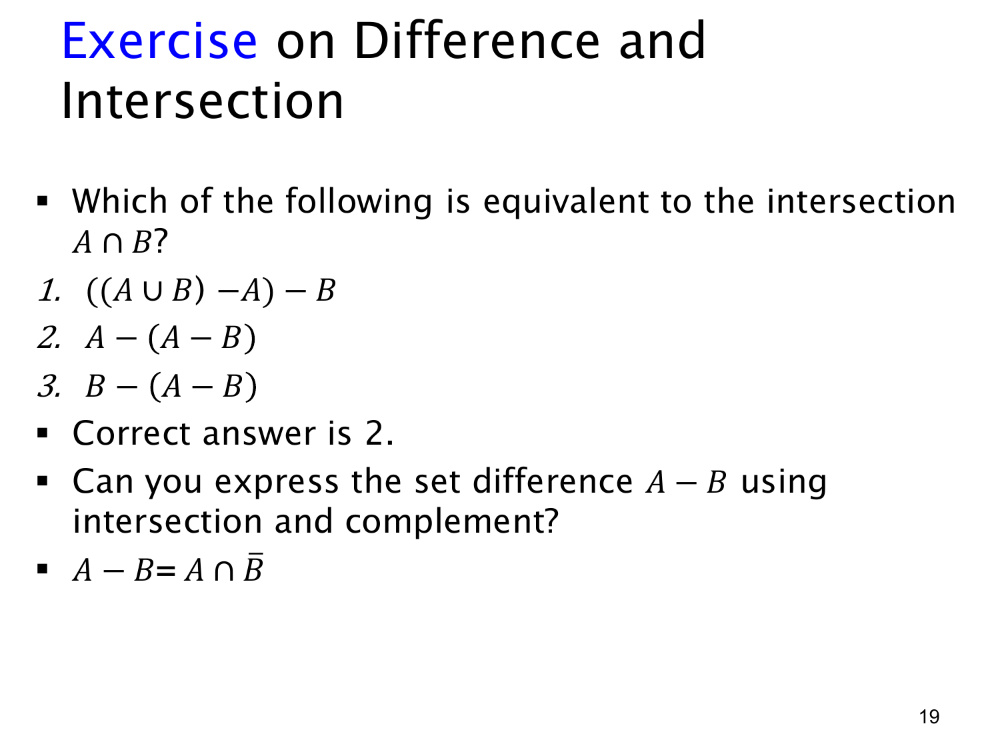

L1.4 · 第 19 页讲解原文
查看这一页课件

用差集表达交集，并把差集写成补集
本页问三个式子中哪个总与 A∩B 相等。答案是第 2 个：
A−(A−B)=A∩B.
理解方式是：A−B 包含“在 A 中但不在 B 中”的元素；再从 A 中删去这一部分，留下的恰好是既在 A 中又在 B 中的元素。也可按元素 x 检查：x∈A−(A−B) 等价于 x∈A 且 x∈/(A−B)；在已知 x∈A 的前提下，后者等价于 x∈B，于是得到 x∈A∩B。
其他两项为什么不对？第 1 个 ((A∪B)−A)−B，先从并集删去 A，剩下 B−A；再删去 B，结果是空集。第 3 个 B−(A−B) 中，被减去的 A−B 与 B 本来不相交，因此结果仍是 B。它们只有在特殊集合取值下才可能碰巧等于 A∩B，不能作为一般恒等式。
本页最后给出差集的另一种表达：若补集是相对于同一个全集 U 定义，则
A−B=A∩B.
右边要求 x 同时“属于 A”且“属于 B 的补集”，也就是“属于 A 且不属于 B”，与差集定义完全相同。这说明集合运算的规则可以通过成员条件和命题逻辑来检验。